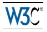

Accessibilitat - Què és?
L’accessibilitat web té com a objectiu aconseguir que les pàgines web puguin ésser utilitzades pel màxim nombre de persones, siguin quins siguin els seus coneixements o capacitats personals i independentment de les característiques tècniques del dispositiu que utilitzin per accedir a internet.
Barreres a l'accessibilitat:
- (I) - Discapacitats visuals (1)
- (II) - Discapacitats visuals (2)
- (III) - Discapacitats visuals (3)
- (IV) - Discapacitats auditives i motrius
- Pautes WCAG - recomanacions WAI
Usabilitat - Què és?
La usabilitat (de l'anglès usability) és la facilitat amb què la gent pot usar una eina o un giny, per aconseguir un objectiu concret.
El terme també pot fer referència als mètodes per mesurar la usabilitat i a l'estudi dels principis que doten un objecte.
Una web UX - Usability és clara i intuïtiva.
“Usabilitat és l’atribut de qualitat de les interfícies”
“Usabilitat és l’atribut de qualitat que mesura com són de fàcils d'utilitzar les interfícies”
Jacob Nielsen
La iniciativa d’accessibilitat web (WAI)
És una activitat desenvolupada pel W3C per tal de facilitar l’accés a les persones amb discapacitat.
Tasques:
- Desenvolupament de pautes d’accessibilitat
- Millora de les eines per a l’avaluació i reparació d’accessibilitat web
- Conscienciació sobre el disseny accessible de pàgines web
Government - la web accessible
Government.se ofereix opcions d’accessibilitat.
Jakob Nielsen, expert en Usabilitat
Es considera que és un dels creadors del concepte d'usabilitat.
El 1997 va publicar dos breus articles sobre com preparar textos per publicar-se en webs que han marcat des de llavors les pautes de la usabilitat.
És una de les persones més respectades a nivell mundial en usabilitat web, era conegut com a "gurú" de la usabilitat.
Jakob Nielsen Nielsen Norman Group (NN/g)Steve Krug, consultor expert en UX
Usability / UX consultant Steve Krug (pronounced "kroog") is best known as the author of Don't Make Me Think and Rocket Surgery Made Easy.
El consultor Steve Krug és l'autor de Don't Make Me Think (No em facis pensar), un llibre sobre usabilitat que ha tingut molta influència des de la seva publicació.
Col·laboracions
SOC – vei d'Ocupació de Catalunya
Generalitat · UE · Fons Social Europeu